Archives : 2007-04
1/日本之行 @ Apr 30, 2007
下大雨，差点没赶上中午12点的火车，刚上车火车就开了。发现一个奇怪的事儿，我们从12节车厢上了火车，走到第9节车厢居然到尽头了，列车员要我们下车，往后走再上第8节车厢，第8节车厢前有个火车头......太奇怪了。不会同时两辆火车一起走吧？
没觉得动车比原先的T字头车舒适在哪里，速度倒是快了半小时，好象到上海前只停了常州站。下了火车换乘地铁到龙阳路下，接着换乘磁悬浮列车到机场。预订了机场边上的上航假日酒店，从机场打车出来居然走了四十多分钟，价格一路跳到49元。觉得不对劲，打电话到酒店问，从机场出来只有三公里路程，大约10分钟左右。司机老先生煞有介事带着我们左拐右拐，真象那么回事，NND~~到了酒店门口我问出租车司机怎么办？他说：“你付11元吧。”后来酒店服务生说绕路、拒载等不符合规定的情况，可以不用付钱给他。
早前就耳闻上海的出租车服务很规范，这是第一次遇到这种状况。驾驶员编号为207900，如果您正好在浦东机场乘上这位司机的出租，务必小心哦~
明天下午14：35的飞机，18：10到成田机场。这个时间好象有点问题，两个小时应该到东京了吧？冈本后天还在东京就好了，嘿嘿~~
第一次乘坐上海磁悬浮列车。
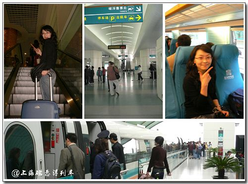
暂别 @ Apr 29, 2007
真的，累。
晚上公司还要聚餐:(
明天中午12点的火车前往上海浦东机场。
如果日本方便上网的话，会及时更新这里的。
节日放松、愉快！
无奈 @ Apr 29, 2007
昨晚加班到12点，早晨早早的就醒了，满心的压迫感，看来节前完成不了主管交待的作业了。一直处于工作的紧张状态，怎能有闲情去考虑别的事情，无奈之余希望晚上收拾行李的时候不要缺这少那，明天可以顺利出行。
5岁的中国茶 @ Apr 26, 2007
节前又开始忙了，头绪有点乱，不断地记录在工作笔记上提醒自己。工作比较多，还要好好想想五一去日本要准备些什么，忙忙碌碌的紧张生活，不知道旅行是不是真能让人松弛下来？发现工作忙了之后好象没有功夫去考虑如何打扮如何购物如何旅行，我是理想主义者，我看重的事情如果出了差错，会很自责。还是现实主义比较好，大部分时候都是赢家......
公司打算招一个助理，据说有120人投了简历。就业竞争果真这么惨烈吗？
前天大哥发短信祝我“五岁”生日，其实是Chinese tea到了今年4月8日已经是5岁年纪啦。让我们都把表调到4月8日，一起为中国茶祝福三秒钟~大哥说他错了一次，低估了我的坚持力，以为我娱乐的兴趣很快就会消失，没想到我一写就是5年的BLOG。5年发生了很多事情，我的变化也很大。有些是我喜欢的，有些自己也很难接受。可是我就是这么走过来的，难怪大哥揪心呢。我想我最大的变化是不再为了迎合别人活着。不过我同事说得好：“你太率真，太不愿意保护自己了，是个好人。”
下一个5年，我不知道自己会怎么样！希望大哥能继续帮助我维护中国茶，希望中国茶能清醒、理智的看待世界，不卑不亢，执着持久，清淡如风，自在地悲喜！大致整理了多年来的老照片，有的只剩下很小的尺寸，所以很珍贵。从这些照片上可以看到岁月悄然刻画在表情里的经过。
Toshiba 811T @ Apr 25, 2007
刚买了款Toshiba 811T，这么眩的颜色好象不是我的颜色，之前的手机摔到地上两次，摔坏了公放，等有了配件才能修。

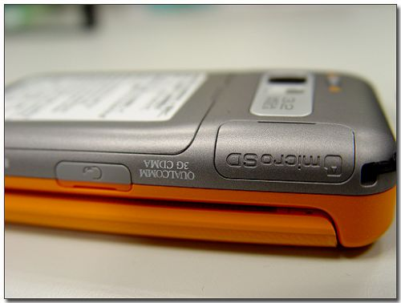

四月的上海 @ Apr 23, 2007
Angie的新伙伴“柯基犬”，您有好名字推荐吗？

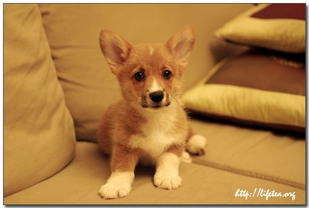
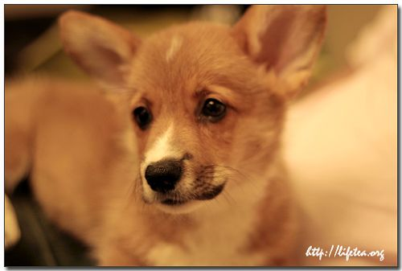
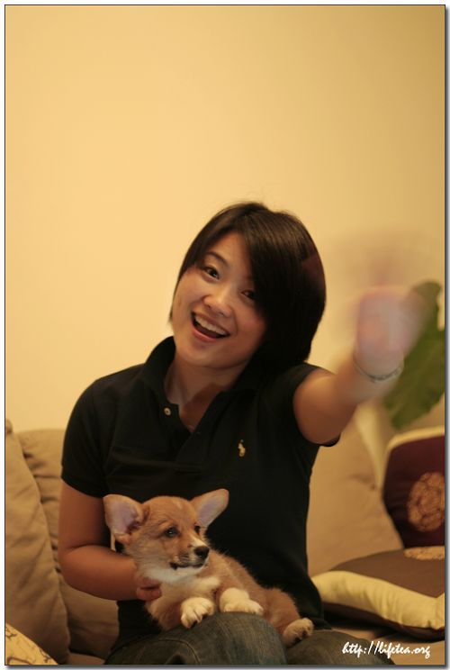
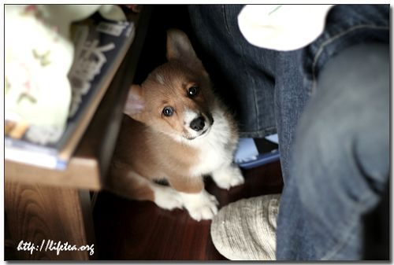

四月的上海，有点闷热。


Shin想去这家久闻其名的餐厅吃晚餐，结果令我们三人大失所望。菜做的不怎么样之外，餐厅卫生也不象外面看上去那么好，价格贵，菜既不好吃份量还少得可怜。强烈不推荐，除非您在减肥~

上周五下午沪宁高速开了两个多小时，赶在晚上7点左右接到Angie直接往徐家汇的上海体育馆走。张学友的演唱会在7：30开始，结果我们从苏州河到徐家汇到找到停车的地方花了将近2个小时。即使有钱在上海过得也不会痛快，哪怕开着法拉利。这么拥挤的交通，这么多人，显得整个城市乱糟糟闹哄哄的，人心也不由地烦躁！一路小跑进馆内，居然演出还持续了一个多小时，Jacky的情歌唱得颇为用情，唱得人的情绪随之起起浮浮，不愧为天王，不枉我们对他的喜爱。当我们开心得啃着鸡腿喝着饮料去拿车时，老远发现上面贴着一张罚单，NND~~这就是上海！所有停靠在马路两边的汽车都贴了违停罚单！停车的时候警察叔叔就在不远处执勤，车子几乎停满馆外的两侧马路。上海的交警一定是很富裕的职业吧？！
城市边缘 @ Apr 20, 2007
Canon EOS 350D+Tamron 28-75mm镜头，第一次用这款朋友送的镜头，遮光罩塑料感太强，担心不小心会折弯喽~相比还是喜欢仕马的手感！
专心致志;
这羊忒有气质了:)哈喽~

善于开拓;

乖巧;
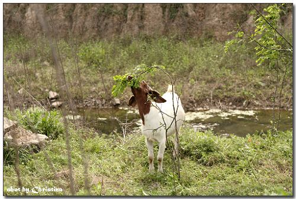
牧羊女:D

花.篇


生命不息，折腾不止 @ Apr 20, 2007
出差真TMD浪费时间，如果是连续出差，累么累得要死，就是耗时间耗精力的累，加上长途跋涉更是磨人。公司如果同意自驾车出差的话，我宁愿开车。当然有哪个傻瓜愿意承担这种风险？公司不会，自己会，哈哈~所以自己是傻瓜~~这次有日本客人在，发现日本男人的耳朵和鼻孔怎么就比中国男人的干净清爽尼？我那个穿着30欧衬衣的同事...那耳朵...那个啥...那鼻孔里的毛那个长...不过两个男同事每天都换衬衣咯~
上午冲了一杯浓浓的咖啡，知道这玩意有副作用，可需要呀！下午提前两小时下班前往上海，下面两天停留在上海。
生命不息，折腾不止！
Easter澳洲第一峰摄影手记 - jiajialing @ Apr 17, 2007
前两天hank说他和jiajia去哪儿哪儿玩的，当时在忙没时间多聊，今天看了jiajialing msn space上Easter澳洲第一峰摄影手记，真TMD棒，那些照片！过两天我也要上些PP：）

Every women is beautiful. @ Apr 13, 2007


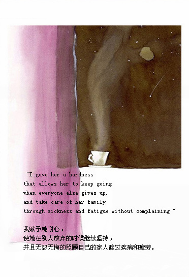

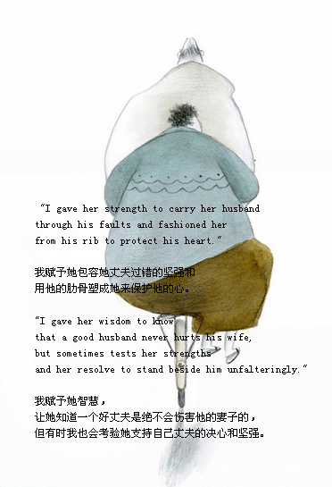

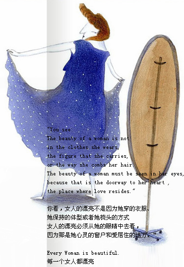
忙碌 @ Apr 10, 2007
刚过下班时间，工作间隙上来冒个泡~~前几年闲够了，这段时间忙碌得象只工蚁，确认这之后的日子会更忙！每天新的事情不断冒出来需要处理，每天都担心是不是遗漏了哪个细节，忙碌象飙车一样使肾上腺素速增~
忙碌使人烦躁；
忙碌使人充实；
忙碌使人沉静；
忙碌使人无奈；
忙碌可以抵御烦恼；
忙碌是否能带来预期的收益？
无题 @ Apr 08, 2007
两周下来，就一个字“忙”。
有个MM问我每天为什么都走的那么晚，让人怎么回答呢？
不知道为什么这段时间工作特别忙，乱七八糟的事总是打断手头的工作，电话、E-MAIL、翻合同写价格，翻合同写价格、E-MAIL，电话......下班回家的路上不停打哈欠，好象积累了一整天的哈欠在那个时刻一起涌上来？！要是有人能送我上下班，也许会睡上一路。难不成处于亚健康状况？
女同事剖腹产下一名7斤多的男孩，孩子的爸爸喜笑颜开地来公司发红蛋。从结婚到生子...速度那个快...孩子随母亲姓...也许没有过多时间思考的人生才会幸福？！都说今年是金猪年，后来说算错了，其实是土猪年。不迷信的人管它是金猪还是土猪，只要是个健康的宝宝就好~一时间公司上上下下常能遇见挺着肚子的准妈妈们，患了流行性感冒似的。电话中问一31岁的单身好友：“急不急啊？看见那么多结婚生子的女人？”“没感觉，她们做什么和我有什么关系呀？！”被一个男人忠心深爱的准妈妈才是幸福的。反之，则与《Pan's Labyrinth》中怀有身孕的卡门一般给人以悲哀。
说到悲哀，没有比春暖花开之即没精力外出拨弄相机更悲哀的了。有人在三月中旬特地去江西婺源看油菜花。江宁的某条马路边有一小簇黄色油菜花，虽比不上婺源的壮观，自我安慰一下算是看过了。什么时候“忙”才是尽头呢？
订购洪晃的杂志 @ Apr 03, 2007
向洪晃的杂志社发了电子邮件，打算订购全年《ＩＬＯＯＫ》和《无目的美好生活》。如果天下杂志都一个样，我宁愿订购洪晃的杂志。谁让她个人魅力大，骂人刻薄不留情面呢~~
邮件刚刚发出，看看他们的工作效率如何。您若有兴趣也可以联系。
电话：010-64362098-611
电邮地址：jing.wang@cimgchina.com
哎呀，回复速度那是相当的快，工作效率惊人，刚发了这篇博，回信就到了，估计是自动回复咯？！回复如下：
如果您订阅全年的世界都市，我免费送给您《无目的美好生活》，您需要通过邮局汇款：北京市大山子邮局80号信箱 100015 负责人收，一共是200元，现在赠送的礼品是MB的化妆品，或者您可以拨打免费订阅热线8008106586，谢谢！
只是看似幸福 @ Apr 02, 2007
《城里的月光不再》
你抽的烟，让我找遍，镇上的店
一个美且静的女子，这样用力的爱，终究也只是伤了自己。
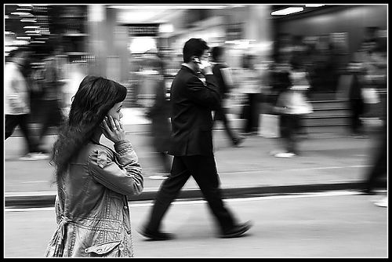
上周似乎是工作上最忙碌的一周，每天下班后毫无精神，吃过晚饭就想睡觉，一下班哈欠便接连不断地开始了。上周也是春天到来后温度最高的一周，户外出现一些穿着短袖的年轻人。万物蓬勃生长，暖冬给了害虫和老鼠良好的生存环境。春天带来又一次生命的延展，人们体内各种欲望蠢蠢欲动，象空气般游走。美好的，纯情的，愚蠢的，丑陋的......真实而无可阻挡。
上周...听一个朋友娓娓道来，爱与幸福还在，只是内心有支撑不起的激情与热情。两年多没有夫妻生活，象大多数人的婚姻一般患上了阳痿。由不顾一切的爱情到难以割舍的相伴，身体却不再对对方敏感、渴望，转而需要新鲜的东西填补进来。朋友若有所思自言自语道：“还是要去这么做的，一定要试着去做。”做爱，由衷地做爱，对婚姻究竟有多重要？大多数人在伪生活中挣扎，也有将伪生活粉饰得光鲜亮丽，如真的一般引来羡叹。我们会心一笑...那还是伪生活！大多数人按约定俗成的线路在现实中行走，象模象样，看似幸福地结婚、怀孕、生子。想到“谁都有秘密”，想起某人BLOG里写着“谁都有点破事”，恐龙那句“或许网络的背后是一只会打字的狗”，不知道真相，便可继续看似幸福的生活，难道你不是吗？
有个朋友说：“你只是看到别人光鲜亮丽的一面，想象又夸大了这种光鲜亮丽。不好的你只是不了解而已。了解的你也知道那是虚伪地表演。你说总和差的人相比不会进步，其实进步什么的都是虚的，自己快乐才是真的。”此时此刻想戴上耳机听着音乐漫无目的地在黑夜中行走。
笑话一则：
老师问学生：“虫牙、烂萝卜，怀孕的共同点是什么？”
全班只有两个学生有答案，一个得了80分，一个得了100分。
80分的答案：都是虫子惹的祸。
100分的答案：都拔得太慢。